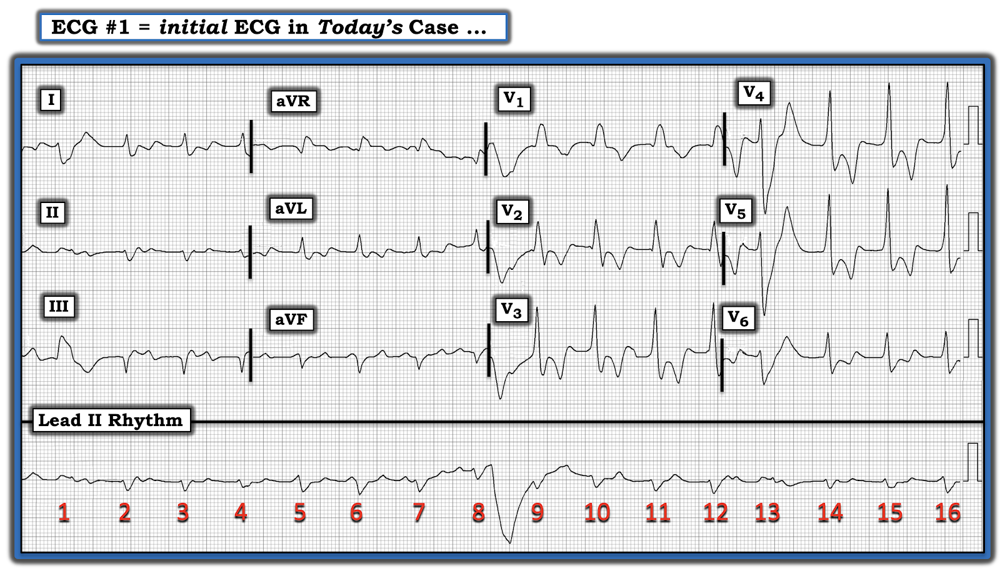
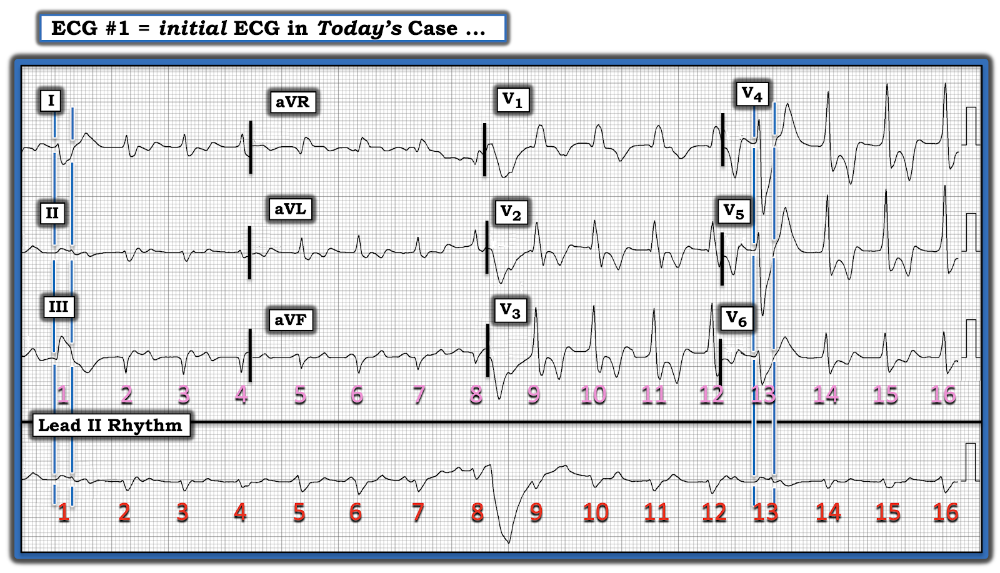
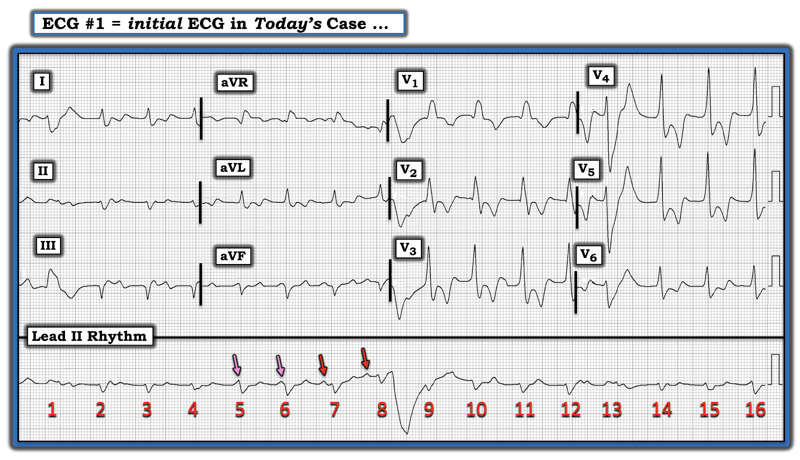
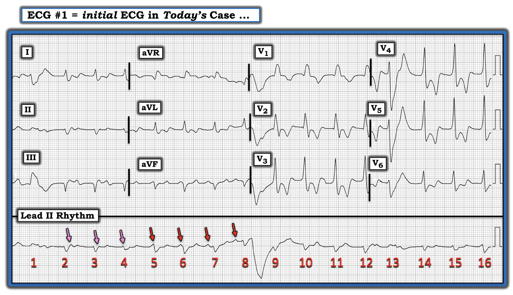
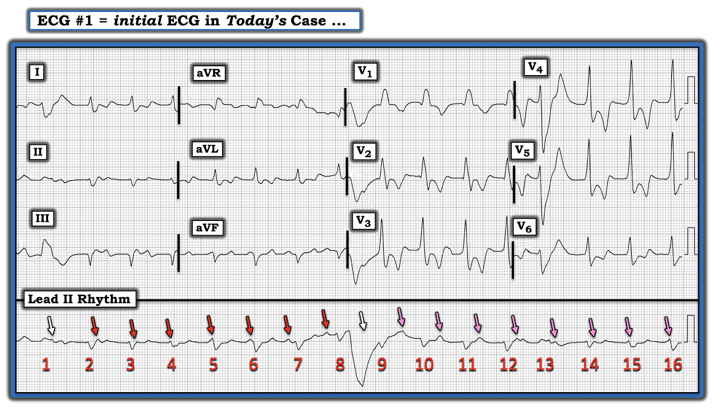
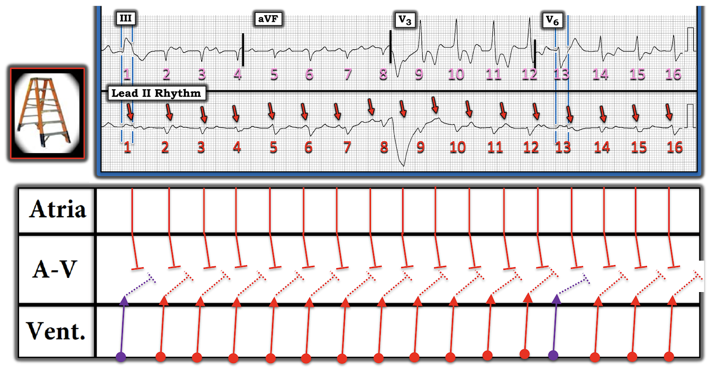

ECG Blog #328 — Chuyện gì đã xảy ra sau cú ngã?
Điện tâm đồ trong Hình-1 — được ghi ở một người đàn ông trung niên có tiền sử bệnh gan do rượu lâu năm, nhập viện sau một cú ngã. Vào lúc ghi điện tâm đồ này, bệnh nhân đang trong tình trạng bệnh nặng cấp tính.
CÂU HỎI:
- BẠN sẽ đọc điện tâm đồ trong Hình-1 như thế nào?
- Về lâm sàng — Điều gì có thể giải thích những thay đổi mà bạn thấy?


=========================================
LƯU Ý: Có nhiều lý do khiến việc đọc nhịp của ca hôm nay hoá ra đặc biệt khó khăn. Bao gồm:
- Có nhiễu (artifact).
- Sóng P nhỏ — và không thấy được ở hầu hết các chuyển đạo.
- Phức bộ QRS ở chuyển đạo II rất nhỏ — vì hình dạng QRS ở chuyển đạo I và III gần như ngược hướng nhau (Điều này khiến khó phân biệt sóng P với phức bộ QRS với sóng T trên dải nhịp (rhythm strip) dài duy nhất ở chuyển đạo II).
- Nhịp nền không rõ ràng.
- Có nhiều hơn 1 hình dạng QRS.
=========================================
SUY NGHĨ CỦA TÔI về điện tâm đồ trong Hình-1:
Tôi nghĩ MẤU CHỐT để đọc nhịp của ca hôm nay là trước hết phải xác định hoạt động nhĩ. Như tôi đã đề cập ở trên — nhiệm vụ đầu tiên này trở nên phức tạp do sóng P nhỏ — và do khó phân biệt sóng P với phức bộ QRS với sóng T trên dải nhịp dài ở chuyển đạo II.
- Có 2 phức bộ QRS trông khác với 14 nhát còn lại ( = nhát #1 và 13). QRS của 2 nhát này có vẻ rất rộng — không có sóng P đi trước — và ít nhất với nhát #13, nhát này đến sớm (Xem Hình-2 — hình làm nổi bật 2 nhát trông khác biệt này ở tất cả các chuyển đạo được ghi đồng thời). Có lẽ — nhát #1 và 13 là PVC (ngoại tâm thu thất — Premature Ventricular Contractions).
- Vì hoạt động điện của PVC là nhát #1 ngược hướng ở chuyển đạo I (chủ yếu âm) so với chuyển đạo III (hoàn toàn dương) — hình dạng QRS của PVC này ở chuyển đạo II nằm giữa gần như là một vectơ triệt tiêu (null vector). Tôi đã minh hoạ "gần như vectơ triệt tiêu" này cho QRS của 2 PVC trên dải nhịp dài ở chuyển đạo II bằng các đường mốc thời gian dọc màu XANH DƯƠNG đặt ở đầu và cuối 2 PVC này trong Hình-2.


Xác định sóng P:
Tôi xếp bản ghi hôm nay vào hàng khó nhất mà tôi từng gặp về việc xác định hoạt động nhĩ. Tôi tiếp cận nhiệm vụ này theo từng bước:
- BƯỚC-1: Tôi thấy dễ nhất là bắt đầu bằng việc nhanh chóng nhìn tổng quát toàn bộ dải nhịp dài — với mục tiêu cố gắng xác định ít nhất 2 sóng lệch (deflection) liên tiếp trông giống sóng P xoang.
- BƯỚC-2: NẾU có nhịp xoang nền — thì một khi tôi đã xác định được 2 sóng P chắc chắn (và xác định khoảng P-P giữa chúng) — sẽ dễ hơn nhiều để biết cần tìm ở đâu các sóng P xoang khác.
- ĐIỂM THEN CHỐT #1: Sử dụng compa đo (calipers) là điều thiết yếu để "giải" nhịp của ca hôm nay. Đơn giản là không thể đánh giá chính xác tương quan giữa các khoảng P-P và R-R trong một bản ghi phức tạp như thế này trừ khi bạn dùng compa đo.
- ĐIỂM THEN CHỐT #2: Trái với suy nghĩ của nhiều bác sĩ lâm sàng — Dùng compa đo đẩy nhanh việc đọc điện tâm đồ của bạn! Đó là vì một khi bạn đã đặt compa theo một khoảng P-P hay R-R nhất định — chỉ mất không quá vài giây để "dò bước" khoảng đó ở các phần khác của bản ghi.
- Áp dụng các nguyên tắc này vào Hình-3 — tôi đã đánh dấu bằng mũi tên ĐỎ 2 sóng lệch mà tôi nghĩ trông giống sóng P xoang nhất. LƯU Ý: Nếu 2 mũi tên ĐỎ này trong Hình-3 đúng là sóng P xoang — thì khoảng PR trước nhát #7 và 8 không bằng nhau (điều này ngay lập tức gợi ý có thể có phân ly nhĩ thất (AV dissociation)).
- Nhận thấy rằng khoảng P-P của nhịp xoang nền không phải lúc nào cũng hoàn toàn giống nhau ở mọi nhát (tức là, có thể có loạn nhịp xoang (sinus arrhythmia)) — tôi đã dùng khoảng P-P được gợi ý bởi khoảng cách giữa 2 mũi tên ĐỎ này trong Hình-3 — và nghĩ rằng sóng lệch "thêm" thấy ở đầu 2 phức bộ QRS đứng trước (mũi tên HỒNG) nhiều khả năng nhất chính là 2 sóng P xoang đi trước.


Dò bước tìm thêm sóng P:
Được khích lệ bởi những gì có vẻ thực sự là 4 sóng P xoang liên tiếp (với khoảng P-P giữa các sóng P này xấp xỉ như nhau) — tôi tiếp tục lần ngược về trước với compa đặt ở khoảng P-P tương tự (mũi tên HỒNG trong Hình-4).
- Mặc dù phải thừa nhận rằng các sóng lệch được đánh dấu bằng mũi tên HỒNG trong Hình-4 không chỉ ra sóng P chắc chắn như các mũi tên ĐỎ — nhưng vẫn có những dấu hiệu tinh tế của một "cái gì đó thêm" xuất hiện với khoảng cách P-P tương tự giữa các sóng lệch.


Nhịp nền là nhịp xoang!
Dù tinh tế — tôi thấy mình đã có thể dò bước ra các sóng P xoang khá đều trên toàn bộ dải nhịp dài ở chuyển đạo II (các MŨI TÊN bổ sung mà tôi đã thêm vào dải nhịp trong Hình-5).
- Rõ ràng — không thấy dấu hiệu hoạt động nhĩ nào ở chỗ "võng" do nhiễu của đường nền giữa nhát #8-9. Nhưng NẾU chúng ta tiếp tục dịch compa từ ngay trước nhát #8 trở đi (áp dụng khoảng P-P tương tự như tôi đã dùng cho tới lúc này) — có thấy một "cái gì đó" nhỏ dưới mỗi mũi tên trong 8 mũi tên HỒNG tiếp theo ở Hình-5. Dù hoàn toàn thừa nhận rằng "cái gì đó" thêm này rất tinh tế (tức là, chỉ là sự biến dạng nhẹ của sóng T — hoặc một "sóng r giả" ở đầu QRS của nhát #15,16) — tôi nghĩ rất khó có khả năng tất cả các sóng lệch "thêm" này đều là ngẫu nhiên.
- LƯU Ý: Tôi dùng mũi tên TRẮNG cho sóng lệch rất nhỏ trùng với phần cuối phức bộ QRS của PVC thứ 1 (là nhát #1) — vì tôi không thể chứng minh sóng lệch này là sóng P. Nhưng sóng lệch nhỏ thêm này quả thực xuất hiện đúng lúc, với khoảng cách P-P tương tự, trước mũi tên ĐỎ thứ 1.
- ĐIỀU CỐT LÕI: Không có gì hoàn hảo. Dù vậy — các mũi tên màu tôi đặt trong Hình-5 cách nhau một khoảng P-P tương tự (dù không hoàn toàn bằng nhau). Tôi rất nghi ngờ rằng các mũi tên này thể hiện một cơ chế xoang nền (tức là, loạn nhịp xoang) trong bản ghi hôm nay.


Sóng P có liên quan với các phức bộ QRS lân cận không?
Giờ đây khi đã xác định được nhịp xoang nền trong Hình-5 — chúng ta cần xác định LIỆU có sóng P nào trong số này liên quan với các phức bộ QRS lân cận không?
- Chúng ta đã xác định nhát #1 và 13 là PVC.
- Hình dạng QRS của 14 nhát còn lại trên dải nhịp dài ở chuyển đạo II rất giống nhau — và khoảng R-R (trừ các PVC) đều một cách đáng ngạc nhiên. Vì vậy, mặc dù hình dạng QRS thay đổi theo mỗi nhóm 3 chuyển đạo — có vẻ như nhát #2-đến-12; và #14-16 đều phát sinh từ cùng một vị trí.
- Phức bộ QRS của 14 nhát này rộng. Dù khó nhận thấy hơn ở nhát #2,3,4 trong chuyển đạo III — và ở nhát #5-8 trong chuyển đạo aVF — không còn nghi ngờ gì rằng phức bộ QRS của nhát #2-12; và #14-16 ở các chuyển đạo trước tim là rộng.
- TẬP TRUNG CHÚ Ý vào phức bộ QRS của từng nhát trong 14 nhát này (tức là, nhát #2-đến-12; và #14-16). Nhìn vào mũi tên màu gần nhất trong Hình-5 với từng nhát trong 14 nhát này — Chẳng phải mối liên hệ giữa mỗi QRS và mỗi mũi tên màu này liên tục thay đổi sao? Điều này gợi ý có phân ly nhĩ thất hoàn toàn! (tức là, mọi sóng P đều không liên quan với các phức bộ QRS lân cận!).
- Vì phức bộ QRS của nhát #2-12 và #14-16 rộng và phân ly hoàn toàn với các sóng P lân cận — tôi nghi ngờ 14 nhát này là một nhịp thất gia tốc (accelerated ventricular rhythm). Dù vậy — tôi hoàn toàn thừa nhận mình không thể loại trừ khả năng một nhịp bộ nối gia tốc kèm RBBB/LAHB có sẵn từ trước (dù xét theo hình dạng QRS — tôi cho rằng khả năng này thấp hơn).
GIẢN ĐỒ BẬC THANG (LADDERGRAM) tôi đề xuất:
Để làm rõ cách đọc nhịp mà tôi đề xuất cho ca hôm nay — tôi đã vẽ một giản đồ bậc thang (laddergram) trong Hình-6.


ĐIỂM THEN CHỐT #3: Bất kể vị trí phát nhịp của nhát #2-12 và #14-16 là ở đâu — tần số đáp ứng thất trong Hình-6 gần như bằng tần số sóng P xoang (tức là, tần số của cả đáp ứng thất lẫn sóng P xoang đều ~90-100/phút). Việc tần số của 2 ổ tạo nhịp độc lập này gần nhau như vậy khiến nhịp này được xếp là phân ly nhĩ thất đồng nhịp (isorhythmic AV dissociation).
- Như đã bàn trong ECG Blog #195 — hiện tượng phân ly nhĩ thất đồng nhịp có thể giải thích sự dao động nhẹ mà chúng ta thấy ở các khoảng P-P và R-R. Với hiện tượng này, mặc dù nút xoang (SA) và ổ tạo nhịp thoát phát nhịp độc lập — thường có một mối liên hệ "qua lại" giữa sóng P và các phức bộ QRS lân cận. Dù những gì tôi đọc được trong y văn chưa đưa ra cơ chế xác định cho hiện tượng này — cả hai ổ tạo nhịp dường như chịu những ảnh hưởng hơi khác nhau liên quan đến các phản xạ tự chủ và trương lực phế vị (dẫn đến sự dao động nhẹ liên tục ở các khoảng P-P và R-R).
ĐIỂM THEN CHỐT #4: Mặc dù có phân ly nhĩ thất hoàn toàn trong nhịp hôm nay (vì không sóng P nào trên dải nhịp dài được dẫn truyền xuống thất) — nhịp này không đủ tiêu chuẩn là blốc AV hoàn toàn. Như đã nhấn mạnh trong ECG Blog #195 — đó là vì không sóng P nào (mũi tên ĐỎ trong Hình-6) có cơ hội dẫn truyền.
- Tần số đáp ứng thất (~90-100/phút) — đơn giản là quá nhanh để sóng P có cơ hội xuất hiện vào thời điểm mà khoảng PR vừa đủ dài để dẫn truyền xuống thất — và, vào thời điểm mà sóng P không trùng với phức bộ QRS hoặc nằm trong đoạn ST thuộc thời kỳ trơ tuyệt đối.
- ĐIỀU CỐT LÕI về Nhịp Hôm nay: Có thể có hoặc không có một mức độ blốc AV nào đó. Đơn giản là chúng ta không thể biết được từ dải nhịp 16 nhát được cung cấp trong ca hôm nay. Điều chúng ta có thể nói — là có một nhịp xoang nền khá nhanh với phân ly nhĩ thất hoàn toàn do tần số xoang và tần số thất gần như bằng nhau + 2 PVC. Ổ tạo nhịp thoát — nhiều khả năng nhất là một nhịp thất gia tốc.
BƯỚC CUỐI: Còn phần còn lại của điện tâm đồ hôm nay thì sao?
Giờ đây khi đã đọc xong nhịp của bản ghi hôm nay — chúng ta cần quay lại phần còn lại của điện tâm đồ 12 chuyển đạo (để cho rõ — tôi đã đưa lại điện tâm đồ này trong Hình-7). Các dấu hiệu đáng chú ý là: i) ST dạng vòm (coving) ở cả 6 chuyển đạo trước tim; ii) ST chênh xuống tại điểm J rõ rệt ở các chuyển đạo trước tim (đạt 2-3 mm ở các chuyển đạo V3-đến-V5); và, iii) Sóng T đảo ngược sâu, đối xứng ở cả 6 chuyển đạo trước tim — rõ ràng vượt quá mức có thể gặp với RBBB đơn thuần.
- Bất kể nhát #2-12 và #14-16 là một ổ thoát thất gia tốc hay nhịp nhanh bộ nối kèm RBBB/LAHB — các thay đổi ST-T này bất thường rõ rệt, và cho thấy một quá trình cấp tính nào đó.
- Về Chẩn đoán Phân biệt xuất hiện ngay trong đầu khi xét nhịp bất thường hôm nay và các thay đổi ST-T ấn tượng ở các chuyển đạo trước tim — tôi nghĩ tới: i) Thiếu máu cục bộ/nhồi máu cấp; ii) PE cấp diện rộng (thuyên tắc phổi — Pulmonary Embolism); và, iii) Thuyên tắc mỡ (fat embolism) cấp.
- Xét Bệnh sử ( = một bệnh nhân bệnh nặng cấp tính, có bệnh gan do rượu — nhập viện vì một cú ngã gần đây) — tôi nghiêng về PE cấp hoặc thuyên tắc mỡ cấp là biến cố khởi phát nhiều khả năng hơn.
DIỄN TIẾN của ca bệnh:
Đáng tiếc là thông tin theo dõi ca hôm nay còn hạn chế — nhưng tôi được biết bệnh nhân này đã tử vong vài giờ sau đó, sau khi điện tâm đồ trong Hình-7 được ghi.
- Dù tôi biết rất ít về tính chất cụ thể của cú ngã khiến bệnh nhân nhập viện — tôi cho rằng việc bệnh nhân tử vong nhanh chóng, cùng với điện tâm đồ hôm nay, phù hợp nhất với nguyên nhân khởi phát là PE cấp hoặc thuyên tắc mỡ.
- Những năm gần đây, PE cấp diện rộng ngày càng được chú ý như một nguyên nhân gây đột tử hoặc tử vong nhanh ở những bệnh nhân vào viện với sốc hoặc khó thở cấp. Cần đặc biệt nghĩ tới chẩn đoán này khi điện tâm đồ ban đầu cho thấy sóng T đảo ngược ở các chuyển đạo trước tim phía trước (hoặc lan toả) và/hoặc ST chênh xuống tương tự như trong Hình-7. (Xem ECG Blog #313 — để biết thêm về chẩn đoán bằng điện tâm đồ đối với PE cấp).
- Thực thể thuyên tắc mỡ ít được chú ý hơn nhiều — dù có thể gây tử vong nhanh và bất ngờ tương tự. Hội chứng này thường gặp nhất sau chấn thương chỉnh hình — và đặc trưng bởi sự phát tán các cục tắc mỡ khắp tuần hoàn hệ thống. Trong nhiều trường hợp — chẩn đoán thuyên tắc mỡ chỉ được xác lập khi khám nghiệm tử thi. (Xem Kwiatt & Seamon: Int J Crit Illn Inj Sci 3(1):64-68, 2013 — và — Adeyinka & Pierre: NIH StatPearls, 2022 — để biết thêm về hội chứng thuyên tắc mỡ).
=======================================
Lời cảm ơn: Xin cảm ơn Bipin Kumar (Koderma, Ấn Độ) đã chia sẻ ca bệnh và bản ghi này.
=======================================
Các Bài ECG Blog liên quan đến ca hôm nay:
- ECG Blog #205 — Ôn lại Cách tiếp cận Hệ thống của tôi trong đọc điện tâm đồ 12 chuyển đạo.
- ECG Blog #185 — Ôn lại cách tiếp cận hệ thống Ps, Qs, 3R của tôi trong đọc Nhịp.
- ECG Blog #188 — để ôn lại cách đọc (và vẽ) Giản đồ bậc thang (kèm liên kết tới nhiều giản đồ bậc thang minh hoạ — có giải thích từng bước).